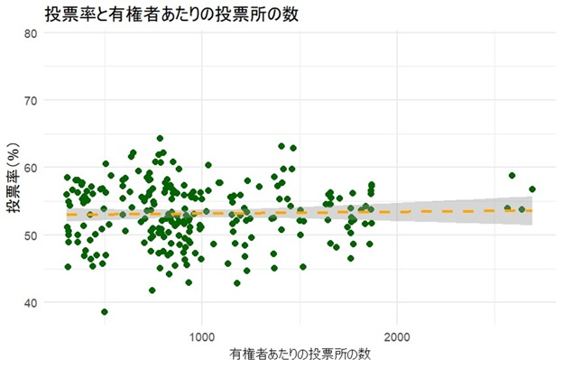
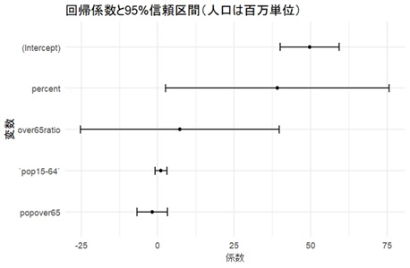

この先輩グループは、日本の低い投票率の問題を考えました。日本の国政選挙の投票率は年々低下しており、民主主義の健全性に対して憂慮があります。どうすれば投票率を上げることができるでしょう？先輩たちは、自分たちの生活を振り返りながら、若者は学校での活動やバイト、プライベートな予定が忙しく、高齢者は体を動かすことが難しいために、投票所に行くことそのものの難しさが問題なのではないかと考えました。だとしたら、投票所数を増やすことこそが投票率を上げる施策になるのではないか。
この研究の難しさは、データ集めにあります。これまでの研究は、政府がまとめて公開している国勢調査という統計を使用しましたが、国勢調査はあくまでも世帯に関する統計であり、投票所の数は含まれていません。そこで、彼ら・彼女らは総務省が国勢調査とは別に公開している「選挙・政治資金制度」というデータを参照し、最近の国政選挙において使用された各自治体の投票所数を調べ、有権者人口で割りました。出来上がったのは、「有権者1人あたりの投票所数」という変数です。

上の図は、有権者1人あたりの投票所数と投票率の相関を表しています。微妙に正の相関があるようにも見えますが、変化（上昇度合い）が灰色の帯の範囲に収まっていると、それは統計的に有意な差とは言えません。この2つの変数の相関には、投票率に影響を与える他の要素が影響を与えているでしょうから、より精密に相関を検証する必要がありそうです。 投票率に影響しそうな変数といえば、自治体の年齢構成が真っ先に思い浮かびます。 若者の投票率の低さがいつも矢面に立たされているからです。そこで、先輩たちは国勢調査データから「65歳以上人口」「15-64歳人口」を抽出し、さらに前者を総人口で割った「65歳以上人口割合」という変数を作りました。"有権者の中の高齢者とそれ以外"だけ見られると良いのですが、残念ながら"18歳以上人口"のデータは見つかりませんでした。ですが、「15-64歳人口」である程度近似できそうです。
